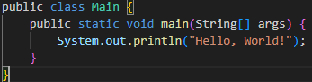

오라클이 개발하고 유지보수하는 고수준의 프로그래밍 언어로, 플랫폼 독립적이며 다양한 응용 프로그램 개발에 사용됨
장점 1. Java는 플랫폼 독립성을 제공하여 다양한 환경에서 실행 가능
장점 2. Java는 객체 지향 프로그래밍을 지원하여 코드의 재사용성과 유지보수성이 뛰어남
장점 3. Java는 자동 메모리 관리(가비지 컬렉션)를 통해 메모리 누수를 방지
장점 4. Java는 강력한 보안 기능을 제공하여 안전한 프로그램을 개발 가능
단점 1. Java는 상대적으로 느린 실행 속도를 가질 수 있음
단점 2. Java는 상당한 메모리를 요구할 수 있음
웹 애플리케이션
모바일 애플리케이션 (특히 안드로이드)
서버 애플리케이션
금융 서비스
대규모 시스템 개발
데이터베이스 연동 어플리케이션
